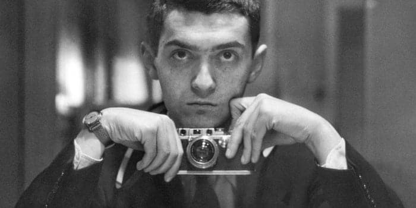
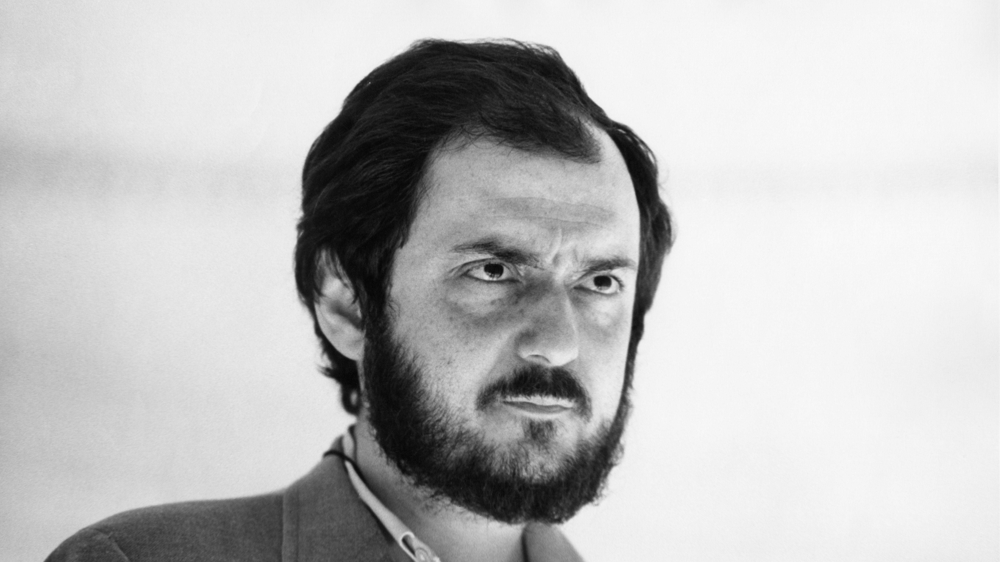
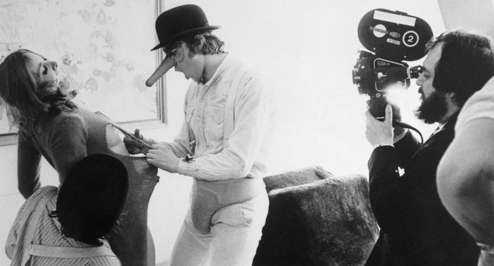
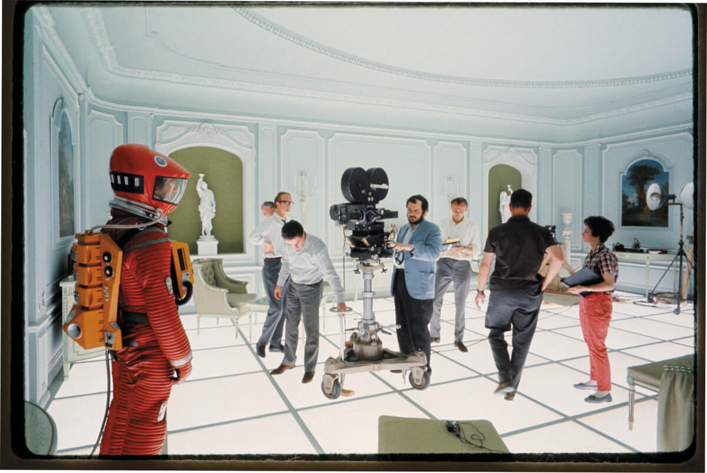
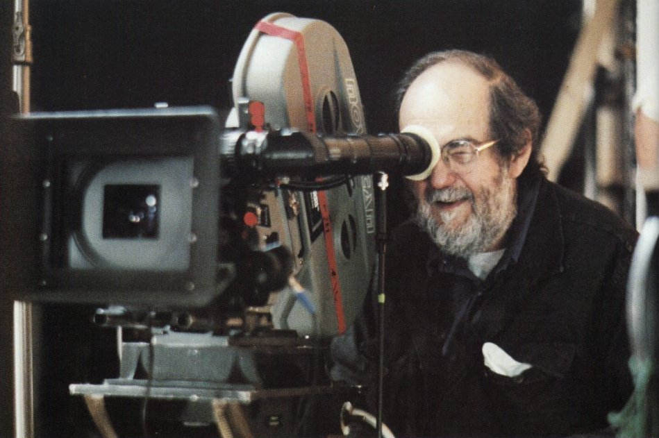

-

Stanley Kubrick (July 26, 1928 – March 7, 1999) was an American film director, producer, screenwriter, and photographer.
-

He is frequently cited as one of the greatest filmmakers in cinematic history. His films, almost all of which are adaptations of novels or short stories, cover a wide range of genres and are noted for their realism, dark humor, unique cinematography, extensive set designs, and evocative use of music.
-

Kubrick was raised in the Bronx, New York City, and attended William Howard Taft High School from 1941 to 1945. He received average grades, but displayed a keen interest in literature, photography, and film from a young age, and taught himself all aspects of film production and directing after graduating from high school.
-

After working as a photographer for Look magazine in the late 1940s and early 1950s, he began making short films on shoestring budgets, and made his first major Hollywood film, The Killing, for United Artists in 1956. This was followed by two collaborations with Kirk Douglas: the war picture Paths of Glory (1957) and the historical epic Spartacus (1960).
-

A demanding perfectionist, Kubrick assumed control over most aspects of the filmmaking process, from direction and writing to editing, and took painstaking care with researching his films and staging scenes, working in close coordination with his actors, crew, and other collaborators. He often asked for several dozen retakes of the same shot in a movie, which resulted in many conflicts with his casts. Despite the resulting notoriety among actors, many of Kubrick's films broke new ground in cinematography.